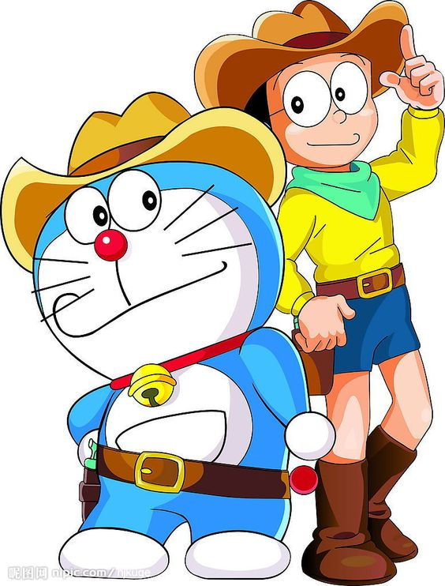

Noby’s life is changed forever the day Doraemon, a cat-like robot from the future, pops out of a time portal in his top desk drawer. Doraemon has been sent back in time by Noby’s great great grandson, Soby, to change Noby’s legendarily tragic life for the better – thereby improving the life of all of his descendants. Unfortuantely, underachiever Noby seems to cause a great deal of his own misfortune, and the addition of an endless supply of futuristic gadgets from Doraemon’s 4th dimensional pocket usually creates even more trouble.
